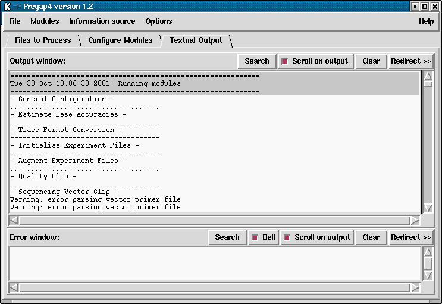

Pregap4 has a main text output window identical to that of gap4 and spin. It is used for showing textual results in the top section and error messages in the lower part. Full details of the user interface are given elsewhere (see section User Interface), but an example of the Text Output Window is given below.
